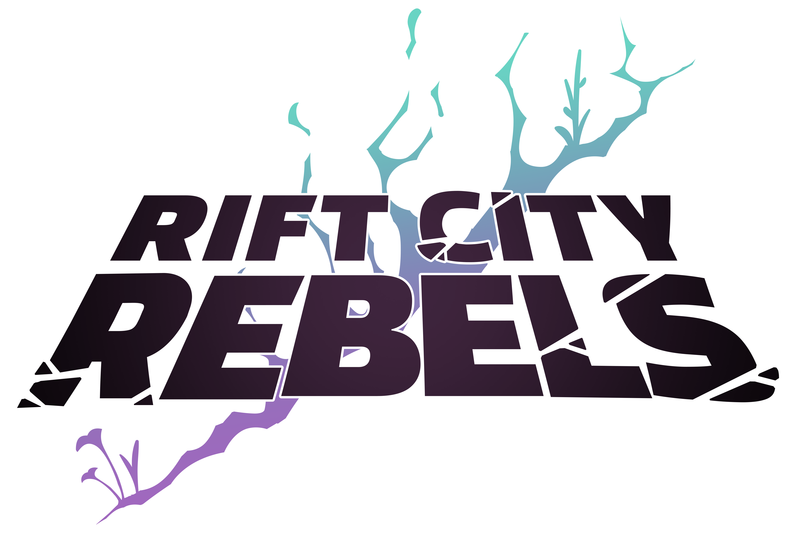

Rift City Rebels

Student Project (Group)Designer, DeveloperUnreal
Rift City Rebels is a Platform Fighter developed as the capstone project for my Game Development program. In this project I worked with 5 other developers and 12 artists. Some features I worked on are:
- Designed character concept and moveset.
- Worked with artist to develop visual design of character.
- Created dynamic camera system
- Developed manager classes to monitor game interactions
- Integrated in engine animations and cutscenes.
- Participate in weekly stand up meetings to update team on progress and blocks.